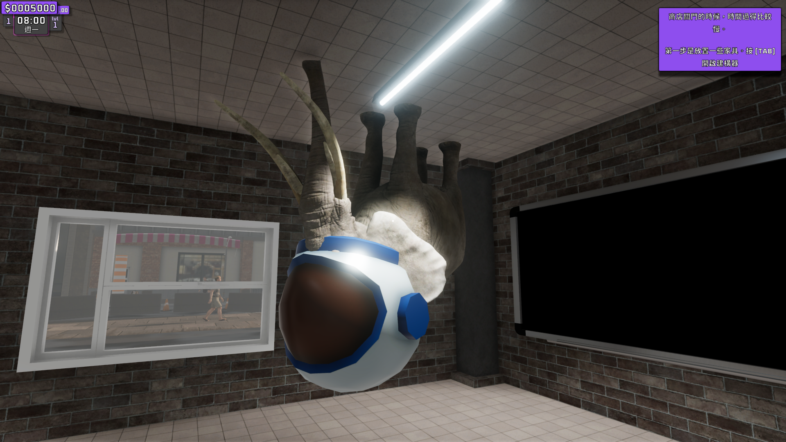

其實滿廢的 對不起大家。
動機 #
這次的被害者是 SupermarketTogether
這是一個模擬超市經營的遊戲，但這次的外掛跟這部分完全沒關係
簡單來講在這個遊戲內有一個房間，是正常遊玩進不去，門口有空氣牆堵住
然後房間內有一隻大象，下圖就是房間內的畫面
總之我的目的就是要進去房間內，對就是那麼廢。

進入房間內 #
正常方法(? #
一開始先去看了一下正常該如何透過遊戲內的bug卡進去房間內
簡單來講就是透過unity其中的3D物件不斷重疊會發生穿模的bug來卡入房間內
具體如何進入的話可以查看下面這個影片的7:40的部分
https://www.bilibili.com/video/BV1XXeneoEcJ/
透過CheatEngine #
CheatEngine(以下簡稱CE)，是一個常用來改遊戲內參數的外掛工具，這邊不特別介紹
參考影片的話可以看下列兩個，上面成大資安社的社課主要是介紹CE的基礎使用，下面的則是透過CE來找座標，建議搭配食用
小提醒：找座標時記得把類型改成float比較好找
那總之透過不斷搜尋後就可以找到控制x座標的部分了，接著把參數改成2.5即可進入房間內
恭喜你也是很酷的人了 啪嘰啪嘰啪嘰
值得一提的是，再找參數的時候有發現兩個控制座標的參數
但其中一個改值後不會馬上生效，另一個則會
最後推斷是，其中一個是主要控制的，另一個則有點像是附屬的感覺(?
DLL #
來到這次的重點了，前面單純透過CE來改參數的部分不論是速度還是什麼，缺點太多了
在B33F50UP讀書會上分享的外掛原始檔
因此這邊我們就來把它寫成DLL的形式，透過DLL injection來注入我們寫的壞壞的東西
以此來達到按下特定按鍵就可以瞬移進入房間內的功能
先丟一下github 裡面有這次的原碼及DLL
遇到問題 #
本次遇到最大的問題是，每次開啟所佔用的的address都不同，因此也就不能單純透過一個固定修改某處address的DLL來打天下
而我最初的想法是，會不會他只是base address不同，而其他彼此參數間的相對位置則是固定的
如果參數間的相對距離是固定的，我們也就能透過先去尋找一個好找一點的值(像是金錢)，接著再透過他跟x座標彼此間的address差值，就能夠快速找出x座標的address了
但在重複找了許多次金錢與x座標的address，發現他們彼此間的差值是沒有相關的qq
| money | place | 差值 |
|---|---|---|
| 12455A43E80 | 1222316B88C | 2 328D 85F4 |
| 1CD5CB93BE0 | 1CB32953D08 | 2 2A23 FED8 |
| 1D652C40BE0 | 1D402B92B6C | 2 500A E074 |
| 28FE89F9E80 | 28D82C0752C | 2 65DF 2954 |
| 1AFDC3D4940 | 1ADA2B77B98 | 2 3985 CDA8 |
因此最後的方案就還是要先在開始時去尋找x座標的address，接著再透過輸入進去DLL內，來改變其中預設的address值(預設是寫0x0400000 但當然不可能是這邊)
DLL說明 #
最終DLL的步驟就是先透過讓用戶按下i來出現輸入address的對話框，接著修改後就能透過按下o來瞬移進房間內。按下l來離開房間內
這邊可以搭配上面github內的final.cpp原始碼一起看，這邊就不特別貼整段原始碼了
定義類型 #
剛剛有提到我們是夠過float來改會比較方便，因此在最開頭的地方先定義好
#define TYPE float
定義參數 #
在上面先宣告好參數，在最後的時候給參數附值，也就是我們瞬移後要的座標是多少
struct Params
{
TYPE x_go; // 位置
TYPE y_go;
TYPE x_back;
TYPE y_back;
};
...
g_params.x_go = 2.5f;
g_params.y_go = 2.8f;
g_params.x_back = 2.0f;
g_params.y_back = 2.8f;
取得地址 #
會跳出兩個對話框，一個是讓你輸入address的，一開始會顯示請輸入新的記憶體位址（十六進位）；另一個則是單純確認框，輸入好後按下去即可修改
DWORD_PTR GetUserInputAddress()
{
//輸入部分
HWND hwndInput = CreateWindowEx(
0, L"EDIT", NULL, WS_OVERLAPPED | WS_CAPTION | WS_SYSMENU | WS_VISIBLE | ES_LEFT,
CW_USEDEFAULT, CW_USEDEFAULT, 300, 100, NULL, NULL, GetModuleHandle(NULL), NULL
);
SetWindowText(hwndInput, L"請輸入新的記憶體位址（十六進位）");
ShowWindow(hwndInput, SW_SHOW);
UpdateWindow(hwndInput);
char input[17] = { 0 };
// 確認部分
if (MessageBox(NULL, L"請輸入新的記憶體位址（十六進位）並按下確認", L"輸入地址", MB_OKCANCEL) == IDOK)
{
GetWindowTextA(hwndInput, input, sizeof(input));
DestroyWindow(hwndInput);
return strtoull(input, NULL, 16); // 將輸入的十六進位字符串轉換為地址
}
// 出錯返回原地址
DestroyWindow(hwndInput);
return g_x_address;
}
修改參數 #
這邊就是結合上面兩個定義好的address以及先前設定的參數來修改內存的值了
if (GetAsyncKeyState('O') & 0x8000) // 0x8000 表示該鍵被按下
{
WriteProcessMemory(hProcess, (LPVOID)(g_x_address), &g_params.x_go, sizeof(TYPE), NULL);
WriteProcessMemory(hProcess, (LPVOID)(g_x_address - 0x10), &g_params.y_go, sizeof(TYPE), NULL);
}
if (GetAsyncKeyState('L') & 0x8000) // 0x8000 表示該鍵被按下
{
WriteProcessMemory(hProcess, (LPVOID)(g_x_address), &g_params.x_back, sizeof(TYPE), NULL);
WriteProcessMemory(hProcess, (LPVOID)(g_x_address - 0x10), &g_params.y_back, sizeof(TYPE), NULL);
}
總結 #
耶大概就這樣，DLL外掛的衍伸應用還有很多，絕對不會只有單純這樣改參數這麼簡單，但窩不會，像是也可以透過掛個hook之類的來修改原本的運作方法… 以後如果學到的話會再來寫布拉格的 大概